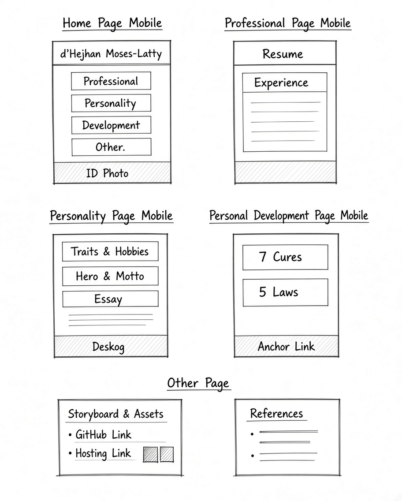
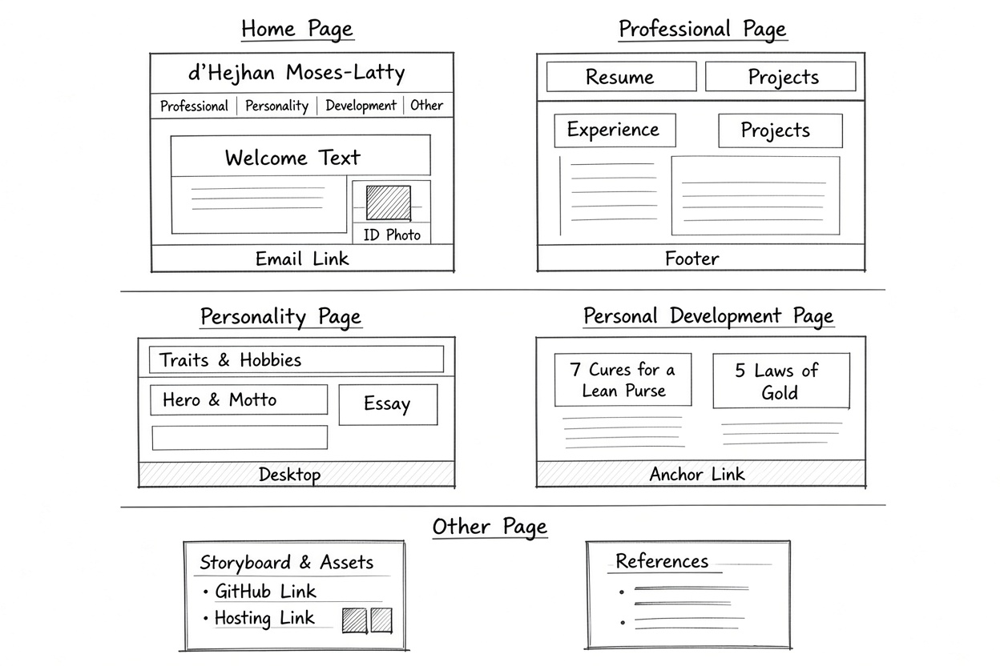

Storyboard
Two separate layout designs were prepared: one for mobile (min 600 px) and one for desktop (min 950 px). The live pages match these layouts.
Mobile Layout

Vertical stack: header → navigation → main content cards → footer. Single-column grid.
Desktop Layout

Horizontal navigation, multi-column card grids, wider content area, sticky header.